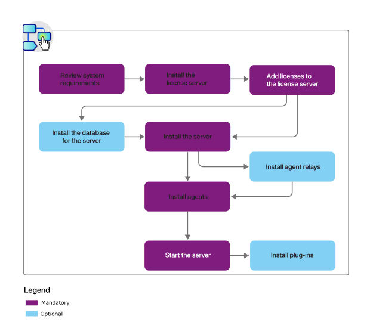

Installing DevOps Deploy
An IBM DevOps Deploy (Deploy) installation consists of a Deploy server, a database server, and at least one agent.
About this task
Installing Deploy
involves the following general steps:
- Review the system requirements. See System Requirements.
- Install a Common Licensing server. See IBM Common Licensing overview.
- Add licenses to the server. For more information about the available licenses, see Licensing.
- If you are using a database other than Apache Derby, install the database before you install the server. See Installing the server database. Apache Derby is appropriate for evaluation installations only. If you choose Apache Derby, the server installation steps install Derby automatically, so it is not necessary to install it manually.
- Install the server. See Installing the DevOps Deploy server.
- Install agent relays. See Installing agent relays.
- Install one or more agents. See Installing agents.
- Start the server. See Starting and stopping the server.
- Optional: Install plug-ins. See Installing plug-ins.
The following diagram illustrates this process:

Note:
Follow these guidelines for performance optimization:
- Installing multiple agents on the same system is not necessary, as a single agent can run parallel deployments for different users. Idle agents consume minimal resources, but deploying numerous agents on the same system may result in a noticeable resource impact.
- For servers on Linux™ or UNIX, connected
to many agents (400 or more), it is advisable to increase the process
and file limit for the server. For example, for Red Hat Enterprise Linux, version 7, use the
/etc/security/limits.conf file. For AIX, use the
/etc/security/limits.d/90-nproc.conf file. Add the following lines to the appropriate file and then restart the
server
computer:
Use the name of the operating system user that is running the server forOS-user soft nofile 60000 OS-user hard nofile 60000 OS-user soft nproc 65535 OS-user hard nproc 65535OS-user.Likewise, if an agent relay is connected to many agents, ensure to increase the process and file limit for the relay in the same way.
What to do next
For information about accessing the Deploy web application, see Accessing DevOps Deploy.